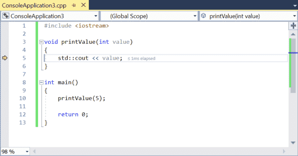
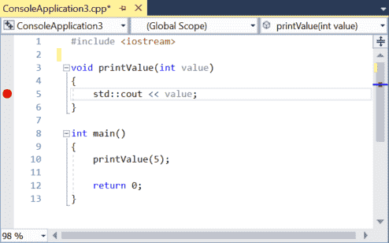
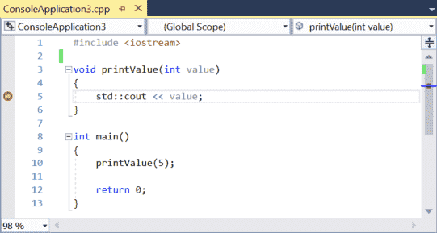

3.7 — 使用集成调试器：运行和断点
虽然逐步执行（在课程 3.6 -- 使用集成调试器：逐步执行) 对于隔离检查代码的每一行很有用，但在一个大型程序中，逐步执行代码可能需要很长时间才能到达你想更详细检查的点。
幸运的是，现代调试器提供了更多工具来帮助我们高效地调试程序。在本课中，我们将介绍一些允许我们更快地浏览代码的调试器功能。
运行到光标处
第一个有用的命令通常被称为 运行到光标处。这个 运行到光标处 命令执行程序，直到执行到达光标选中的语句。然后它将控制权返回给你，这样你就可以从该点开始调试。这是一种高效的方法，可以在代码的特定点开始调试，或者如果已经在调试中，直接跳转到你想进一步检查的地方。
适用于 Visual Studio 用户
在Visual Studio中， 运行到光标处 命令可以通过右键点击代码中的语句并选择 运行到光标处 从上下文菜单，或按Ctrl-F10组合键。
对于 Code::Blocks 用户
在Code::Blocks中， 运行到光标处 命令可以通过右键点击代码中的语句并选择 运行到光标处 从上下文菜单或 调试菜单 > 运行到光标处，或按F4快捷键。
对于 VS Code 用户
在VS Code中， 运行到光标处 命令可以在调试程序时通过右键点击代码中的语句并选择 运行到光标处 从上下文菜单。
让我们用我们一直使用的相同程序来试试：
#include <iostream>
void printValue(int value)
{
std::cout << value << '\n';
}
int main()
{
printValue(5);
return 0;
}
只需在第5行任意位置右键单击，然后选择“运行到光标处”。

你会注意到程序开始运行，执行标记移动到刚刚选择的行。你的程序已经执行到这一点，现在等待你的进一步调试命令。从这里，你可以逐步执行程序， 运行到光标处 到不同的位置，等等……
如果你 运行到光标处 到一个不会执行的位置， 运行到光标处 只会运行你的程序直到终止。
继续
一旦你处于调试会话的中途，你可能想让程序从那个点开始继续运行。最简单的方法是使用 continue 命令。 这个 continue 调试命令只是简单地继续正常地运行程序，要么直到程序终止，要么直到某个事件触发控制权重新交还给你（例如断点，我们将在本课后面介绍）。
适用于 Visual Studio 用户
在Visual Studio中， continue 命令可以在调试程序时通过以下方式访问： 调试菜单 > 继续，或者按下F5快捷键。
对于 Code::Blocks 用户
在Code::Blocks中， continue 命令可以在调试程序时通过以下方式访问： 调试菜单 > 启动/继续，或者按下F8快捷键。
对于 VS Code 用户
在VS Code中， continue 命令可以在调试程序时通过以下方式访问： 运行菜单 > 继续，或者按下 F5 快捷键。
让我们测试一下 continue 命令。如果你的执行标记不在第5行， 运行到光标处 到第5行。然后选择 continue 从这一点开始。你的程序将执行完毕然后终止。
启动
浮点类型的 continue 命令有一个孪生兄弟叫 start。这些 start 命令执行与 continue相同的操作，只是从程序的开头开始。它只能在尚未进入调试会话时调用。
适用于 Visual Studio 用户
在Visual Studio中， start 命令可以在不调试程序时通过 调试菜单 > 开始调试，或者按下F5快捷键。
对于 Code::Blocks 用户
在Code::Blocks中， start 命令可以在不调试程序时通过 调试菜单 > 启动/继续，或者按下F8快捷键。
对于 VS Code 用户
在VS Code中， start 命令可以在不调试程序时通过 运行菜单 > 开始调试，或者按下 F5 快捷键。
如果你对上述示例程序使用 start 命令，它将一路运行下去而不会中断（除了在 VS Code上，因为我们在上一课中设置了 stopAtEntry: true ）。虽然这看起来平淡无奇，但那只是因为我们尚未告诉调试器中断程序。我们将在下一节中更好地使用此命令。
断点
本节中我们要讨论的最后一个主题是断点。 断点 是一个特殊标记，告诉调试器在调试模式下运行时在断点处停止程序的执行。
适用于 Visual Studio 用户
在 Visual Studio 中，你可以通过 调试菜单 > 切换断点，或者右键单击某条语句并选择 切换断点 从上下文菜单中选择，或按F9快捷键，或点击行号左侧（浅灰色区域）。
对于 Code::Blocks 用户
在Code::Blocks中，你可以通过以下方式设置或移除断点： 调试菜单 > 切换断点，或者右键单击某条语句并选择 切换断点 从上下文菜单中选择，或按F5快捷键，或点击行号右侧。
对于 VS Code 用户
在VS Code中，你可以通过以下方式设置或移除断点： 运行菜单 > 切换断点，或者按下 F9 快捷键，或点击行号左侧。
当你设置一个断点时，你会看到一种新图标出现。Visual Studio使用红色圆圈，Code::Blocks使用红色八边形（类似停车标志）：

请在第5行设置一个断点，如上图所示。
现在，选择 启动 命令让调试器运行你的代码，让我们看看断点的实际效果。你会注意到，调试器并没有一直运行到程序结束，而是在断点处停止（执行标记位于断点图标之上）：

就好像你 运行到光标处 运行到了这一点。
断点相对于 运行到光标处有几个优势。首先，断点每次被遇到时都会让调试器将控制权交还给你（不像 运行到光标处，后者每次调用时只运行到光标处一次）。其次，你可以设置一个断点，它会一直存在直到你移除它，而对于 运行到光标处 ，你每次调用该命令时都必须定位到想要运行的位置。
注意，放置在不在执行路径上的行上的断点不会导致调试器停止代码执行。
让我们看一个稍微修改过的程序，它更好地说明了断点和 运行到光标处：
#include <iostream>
void printValue(int value)
{
std::cout << value << '\n';
}
int main()
{
printValue(5);
printValue(6);
printValue(7);
return 0;
}
首先，启动一个新的调试会话，然后执行一个 运行到光标处 到第5行。现在选择 continue程序将继续运行到结束（它不会再在第5行停止，尽管第5行还会再执行两次）。
接下来，在第5行设置断点，然后选择 start程序将在第5行停止。现在选择 continue程序将第二次在第5行停止。选择 continue 再次，它将第三次停止。再 continue，程序将终止。你可以看到断点导致程序在该行执行的次数停下来。
设置下一条语句
还有一个调试命令使用得相当不常见，但至少值得了解，即使你不会经常使用它。 设置下一条语句 命令允许我们将执行点更改为其他语句（有时非正式地称为 跳转）。这可以用来向前跳转执行点，跳过一些本来会执行的代码，或者向后跳转，让已经执行过的内容再次运行。
适用于 Visual Studio 用户
在 Visual Studio 中，你可以通过右键单击语句并选择 设置下一条语句 从上下文菜单中，或者按 Ctrl-Shift-F10 快捷键组合。此选项是上下文相关的，并且仅在调试程序时出现。
对于 Code::Blocks 用户
在 Code::Blocks 中，你可以通过 调试菜单 > 设置下一条语句，或者右键单击某条语句并选择 设置下一条语句 从上下文菜单。Code::Blocks 没有为此命令提供键盘快捷键。
对于 VS Code 用户
在 VS Code 中，你可以通过右键单击语句并选择 跳转到光标 从上下文菜单。此选项是上下文相关的，并且仅在调试程序时出现。
让我们看看向前跳转的实际效果：
#include <iostream>
void printValue(int value)
{
std::cout << value << '\n';
}
int main()
{
printValue(5);
printValue(6);
printValue(7);
return 0;
}
首先， 运行到光标处 到第11行。此时，你应该能看到 5 在控制台输出窗口中。
现在，右键单击第12行，然后选择 设置下一条语句。这会导致第11行被跳过而不执行。然后选择 continue 来完成程序的执行。
程序的输出应该如下所示：
5 7
我们可以看到 printValue(6) 被跳过了。
这个功能在多种场景下都很有用。
在我们探讨基本调试技术时，我们讨论了注释掉函数以判断该函数是否导致问题的方法。这需要修改代码，并记得稍后取消注释。在调试器中，没有直接跳过函数的方法，所以如果你决定这样做，使用 设置下一条语句 跳转到函数调用之上是最简单的方法。
向后跳转也很有用，如果我们想观察刚刚执行过的函数再次运行，从而了解它在做什么。
使用相同的代码， 运行到光标处 到第12行。然后 设置下一条语句 在第11行上，然后 continue。程序的输出应该是：
5 6 6 7
警告
浮点类型的 设置下一条语句 命令会改变执行点，但不会改变程序的其他状态。你的变量将保持跳转前的值。因此，跳转可能导致你的程序产生与正常情况下不同的值、结果或行为。请谨慎使用此功能（尤其是向后跳转）。
警告
你不应该使用 设置下一条语句 来将执行点更改到另一个函数。这可能导致未定义行为，并可能引发崩溃。
“Step back”与通过“设置下一条语句”向后跳转
“Step back”会回退所有状态，就像你从未执行过到那一点一样。对变量值或其他程序状态的任何更改都会被撤销。这本质上是一个用于单步执行的“撤销”命令。
“Set next statement”在用于向后跳转时，只会改变执行点。对变量值或其他程序状态的任何更改都不会被撤销。
总结
你现在已经学习了使用集成调试器观察和控制程序执行的主要方法。虽然这些命令对于诊断代码流程问题（例如确定某些函数是否被调用）很有用，但它们只是集成调试器带来的一部分好处。在下一节课中，我们将开始探索检查程序状态的其他方法，而这些命令是学习它们的前提。开始吧！